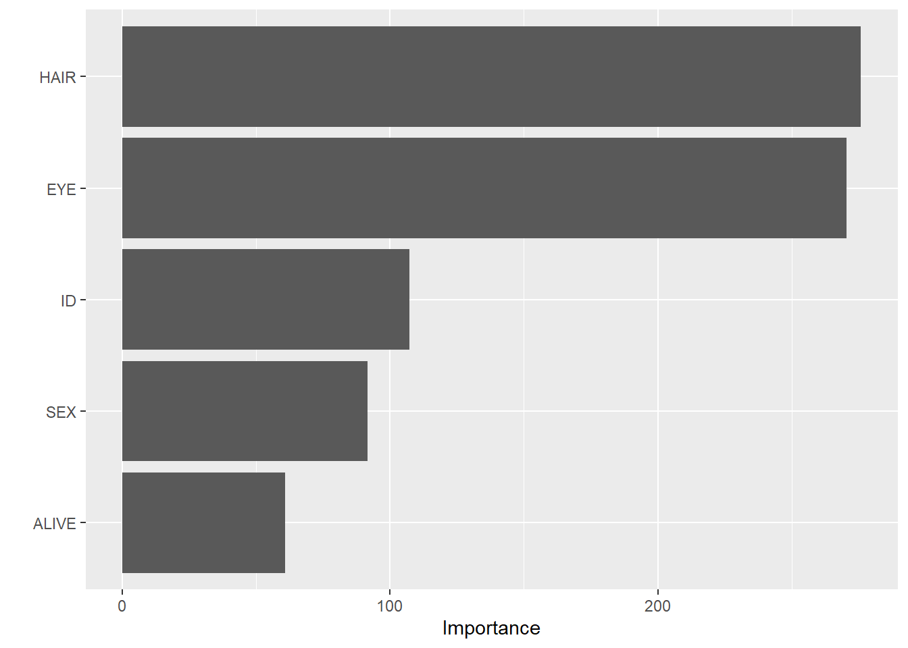
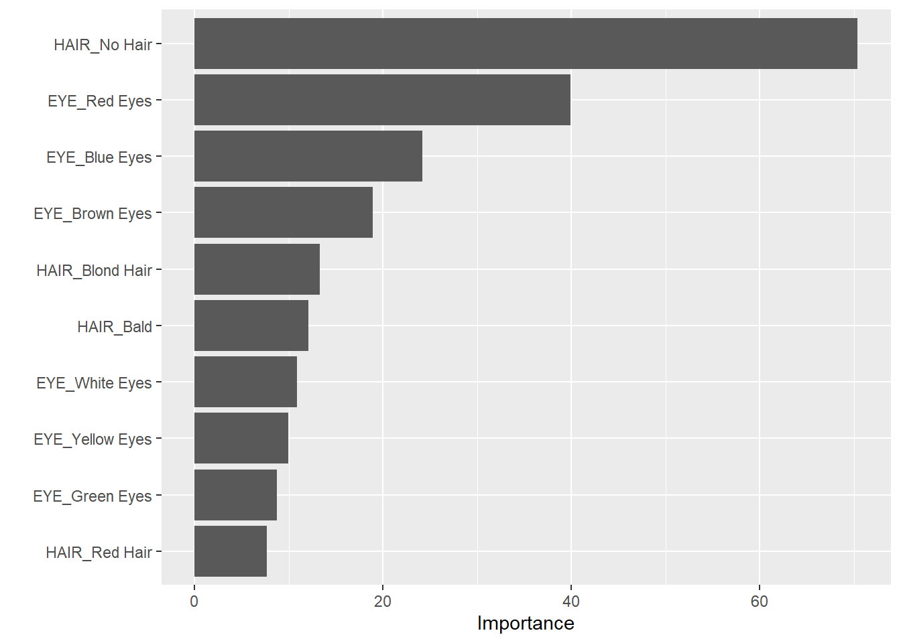
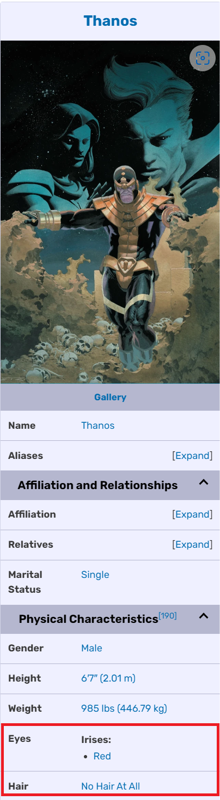

library(tidyverse)
library(tidymodels)
library(vip)
library(fastDummies)
dc <- read_csv("dc-wikia-data.csv")
marvel <- read_csv("marvel-wikia-data.csv")이 데이터는 마블 위키아 및 DC 위키아에서 가져왔습니다. 캐릭터는 2019년 8월 24일에 스크랩되었습니다.
데이터는 각각 DC와 마블에 대해 두 개의 파일로 나뉩니다: ’dc-wikia-data.csv’와 ’marvel-wikia-data.csv’입니다. 각 파일에는 다음과 같은 변수가 있습니다:
| Variable | Definition |
|---|---|
page_id |
The unique identifier for that characters page within the wikia |
name |
The name of the character |
urlslug |
The unique url within the wikia that takes you to the character |
ID |
The identity status of the character (Secret Identity, Public identity, [on marvel only: No Dual Identity]) |
ALIGN |
If the character is Good, Bad or Neutral |
EYE |
Eye color of the character |
HAIR |
Hair color of the character |
SEX |
Sex of the character (e.g. Male, Female, etc.) |
GSM |
If the character is a gender or sexual minority (e.g. Homosexual characters, bisexual characters) |
ALIVE |
If the character is alive or deceased |
APPEARANCES |
The number of appareances of the character in comic books (as of Sep. 2, 2014. Number will become increasingly out of date as time goes on.) |
FIRST APPEARANCE |
The month and year of the character’s first appearance in a comic book, if available |
YEAR |
The year of the character’s first appearance in a comic book, if available |
Random Forest로 ID, EYE, SEX,HAIR, ALIVE 변수를 활용하여 캐릭터의 선/악을 결정하는 요소에 어떤 것들이 영향을 미치는지 알아보도록 하겠습니다.
Load Data and required libraries
Cleaning Data
need_vars <-
c("name", "ID", "ALIGN", "EYE","HAIR", "SEX", "ALIVE")
chars <- dc |> bind_rows(marvel)
chars_filtered <- ## select needed variables
chars |> select(all_of(need_vars))
chars_filtered <- ## filter only good and bad
chars_filtered |> filter(ALIGN %in% c("Good Characters", "Bad Characters"))
chars_filtered <- na.omit(chars_filtered)
chars_filtered_noname <- chars_filtered |> select(-name)Train Model
chars_recipe <- recipe(ALIGN ~ ., data = chars_filtered_noname) |>
prep()
chars_rf <- rand_forest(mode = "classification", engine = "randomForest", trees = 100, mtry = 3)
chars_wf <- workflow() |>
add_recipe(chars_recipe) |>
add_model(chars_rf)
chars_wf_trained <- chars_wf |> fit(chars_filtered_noname)Test Model
predictions <- predict(chars_wf_trained, chars_filtered_noname)
chars_filtered <- chars_filtered |> mutate(Prediction = predictions$.pred_class)
chars_filtered$ALIGN <- factor(chars_filtered$ALIGN,labels = c("Bad Characters", "Good Characters"))
accuracy(chars_filtered, truth = ALIGN, estimate = Prediction)# A tibble: 1 × 3
.metric .estimator .estimate
<chr> <chr> <dbl>
1 accuracy binary 0.700Variable Importance
vip(chars_wf_trained$fit$fit)
신분 노출, 성별, 생존 여부보다 머리색과 눈의 색이 악역/선역을 가르는데 더 중요한 역할을 하는 것으로 나타났습니다. 어떤 색깔이 이를 가르는지 확인해 봅시다.
color_dt <- dummy_cols(chars_filtered_noname) |> select(contains("_"),ALIGN) |> select(-`ALIGN_Bad Characters`, -`ALIGN_Good Characters`) |> select(contains("HAIR"), contains("EYE"),ALIGN)
color_recipe <- recipe(ALIGN ~ ., data = color_dt) |>
prep()
color_rf <- rand_forest(mode = "classification", engine = "randomForest", trees = 100, mtry = 7)
color_wf <- workflow() |>
add_recipe(color_recipe) |>
add_model(color_rf)
color_wf_trained <- color_wf |> fit(color_dt)vip(color_wf_trained$fit$fit)
table(filter(chars,HAIR == "No Hair", EYE == "Red Eyes")$ALIGN)
Bad Characters Good Characters Neutral Characters
107 20 26 실제로 민머리/붉은 눈이 대부분 악역임을 알 수 있습니다.
